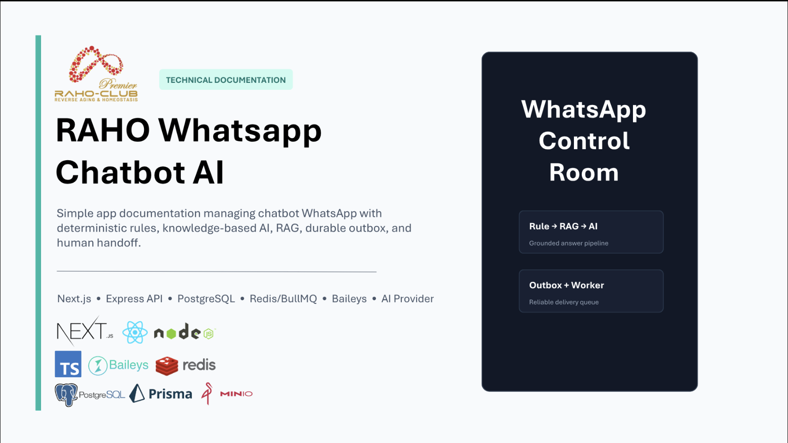

Knowledge base & RAG
AI answers draw on a knowledge base the team can manage, using relevant business information as context.
RAHO CONTROL ROOM
Helping customer service teams answer recurring questions using business knowledge, while keeping the team in control.
Behind the interface
Project documentation and screens from RAHO Control Room.

WhatsApp chatbot documentation: the Rule → RAG → AI flow, with an outbox and worker for message delivery.
Contact details, conversations, and some operational data have been blurred in the screenshots.
Context & contribution
Customer service teams in companies and small businesses face recurring customer questions. This chatbot is designed to help answer them with relevant business information, while providing a way to hand conversations over to a person.
Teams can add a knowledge base. Retrieval-Augmented Generation (RAG) uses this information as context for AI answers, alongside rule-based message handling.
I worked as the Fullstack Developer & System Designer, developing the application interface and backend, and designing the overall system architecture.
Key features
Five features connecting AI automation and customer service.
AI answers draw on a knowledge base the team can manage, using relevant business information as context.
Deterministic rules work alongside AI responses in the chatbot flow.
Customer service teams can browse conversations, take over from AI, and send manual replies from one inbox.
Messages are sent through a queue and processed by a background worker, with support for delivery retries.
When AI creates a new handoff, a question summary is sent to customer service via WhatsApp so the team can follow up.
AI helps answer.
The team can always take over.
System foundations
Responsibilities across the system, from the dashboard to WhatsApp message delivery.